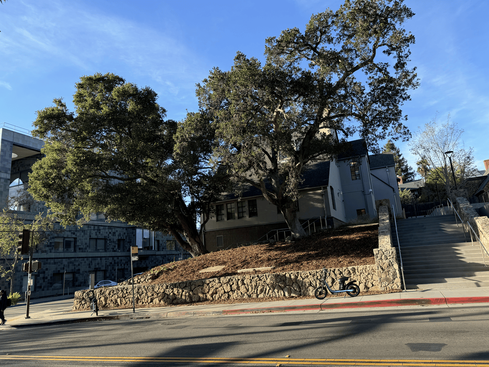
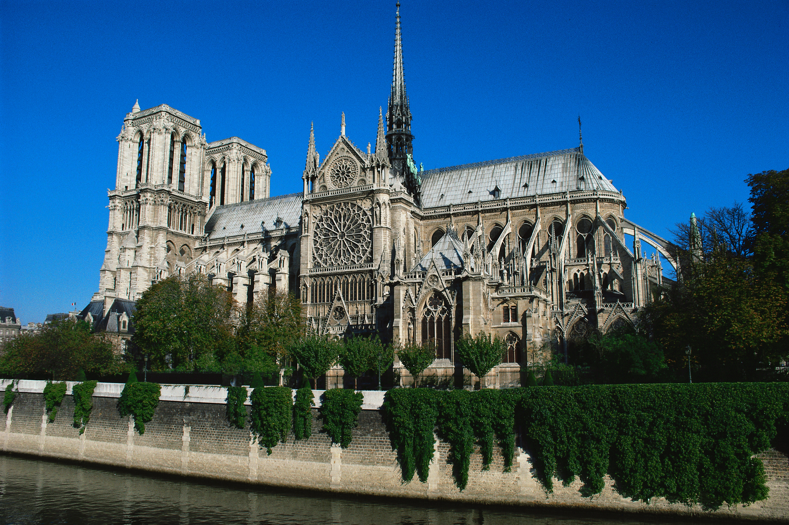
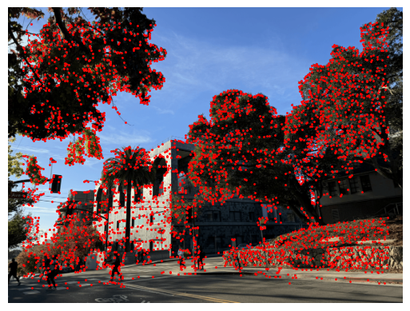

CS 180: Stitching Photo Mosaics |
Part A: Image Warping and Mosaicing |
IntroductionIn the first part of this project, we explore the fundamentals of warping images using homography-based transformations. |
Taking ImagesBelow are the sets of images that I will use to demonstrate basic image mosaicing. "hearst_ave_left.png" "hearst_ave_mid.png"

"hearst_ave_right.png" "willard_left.png" "willard_mid.png" "willard_right.png" 
"shelf_top.png" 
"shelf_mid.png" 
"shelf_bottom.png" |
Recovering HomographiesA homography is a transformation that projects points in one plane onto corresponding points in another plane. In order to apply this, we must first define correspondences between images. Here are some examples of what this may look like (auto-selected points from part B): "himal" correspondences "hlands" correspondences With a given set of source (\((x,y)\)) and target (\((x',y')\)) coordinates, we can compute a homography matrix \(H\): \[ \begin{bmatrix} a & b & c\\ d & e & f\\ g & h & 1 \end{bmatrix} \begin{bmatrix} x\\ y\\ 1 \end{bmatrix} = \begin{bmatrix} wx'\\ wy'\\ w \end{bmatrix} \] This can be manipulated into the form: \[ \begin{bmatrix} x & y & 1 & 0 & 0 & 0 & -xx' & -yx'\\ 0 & 0 & 0 & x & y & 1 & -xy' & -yy'\\ \end{bmatrix} \begin{bmatrix} a\\ b\\ c\\ d\\ e\\ f\\ g\\ h\\ \end{bmatrix} = \begin{bmatrix} x'\\ y'\\ \end{bmatrix} \] For each corresponding pair of source and target coordinates, we make rows according to the manipulated form above, and stack them to obtain an overconstrained least-squares problem. We simply solve this for the variables, and construct \(H\) accordingly. |
Image WarpingWe can now warp and mosaic images using a series of homographies. I begin by warping each image to the plane of a reference image. I use these warps to create an output array that can house all images, and keep track of a global origin for our reference image. I place each image in its own output array and create masks using distance transforms. I then iterate through the images, performing multi-resolution blending with Laplacian and Gaussian stacks. I keep track of a mosaic mask that allows for more complex blending, though it does sometimes result in blurred image outlines. Here is an example of how these intermediate warps and masks may look like for a set of images: 
"shelf_top_w.png" "shelf_top_w_mask.png" 
"shelf_ref.png" 
"shelf_ref_mask.png" 
"shelf_bottom_w.png" 
"shelf_bottom_w_mask.png" I will display the mosaics using manual correspondence selection alongside their automatic counterparts in Part B. |
Image RectificationLastly, we can perform image rectification. This involves selecting correspondences that depict a region we know is a rectangle. We can then warp the image with some appropriately set target correspondences to look at the rectangle straight on. Here are some results: 
"tennis.jpg" 
"tennis_rectified.jpg" "einstein_table.jpg" 
"einstein_table_rectified.jpg"

"notre_dame.jpg" 
"notre_dame_rectified.jpg" |
Part B: Image Warping and Mosaicing |
IntroductionIn the second part of this project, we create a system for automatically stitching images into mosaics. We closely follow the MOPS paper by Brown et al. I will explain each step of automatic correspondence selection, using a pair of images from the "hearst_ave" set as an example. |
Harris Corner DetectionWhen searching for correspondence points between two images, we require a number of interest points to begin with. For our purposes, we a method from the skimage library to detect Harris corners in our image. We apply a threshold on these corner strengths to obtain a reasonable number of starting interest points (set \(I\)). I also extract Harris corners on multiple scales using the Gaussian image pyramid. |\(I_1\)| \(= 3,646\)

|\(I_2\)|\(= 3,665\) |
Adaptive Non-Maximal SuppressionWe want the corners to be distributed relatively evenly throughout our image for robust homographies. To achieve this, we suppress interest points based on their proximity to another interest point with a stronger corner strength. We can store the radius \(r\) around each interest point within which it will not be suppressed. Then, we pick \(n\) points with the largest radii as our interest points. 
|\(I_1\)| \(= 750\) |\(I_2\)| \(= 750\) |
Extracting Feature DescriptorsNext, we want to extract features using these interest points. To do so, we extract \(40\) x \(40\) patches centered at each interest point. We scale this down by a factor of \(5\) with anti-aliasing to obtain \(8\) x \(8\) patches. This reduces computational load on our analysis in feature space. "hearst_ave_left.png" patch boundaries "hearst_ave_mid.png" patch boundaries "hearst_ave_left.png" patches "hearst_ave_mid.png" patches |
Feature Space Outlier RejectionHere, we use the extracted patches to determine points that are likely to be true correspondences. To do this, I create a k-d tree for each set of patches. Let's call the patch sets \(p1\) and \(p2\), and their trees \(t1\) and \(t2\). For each patch in \(p1\), I compute the ratio between the patch's distances to it's first and second nearest neighbors in \(p2\). If this ratio is below a threshold this indicates that the first nearest neighbor is significant, so I store it. I do the same thing for patches in \(p2\). I then do an extra step of processing, only keeping interest points that are mutual nearest neighbors. This process as a whole is powerful, as it removes candidate interest points that are not strongly shared between images. |\(I_1\)| \(= 67\) |\(I_2\)| \(= 67\) |
RANSAC and Homography EstimationFinally, we arrive Random Sample Consensus, or RANSAC. In this final step, we pick four random pairs of correspondences from \(I_1\) and \(I_2\), and use them recover a homography matrix \(H\). We then apply this transformation to all of the points in \(I_1\), and check their distances \(d_i\) from the "true" points in \(I_2\). We define some threshold \(\epsilon\), such that each point \(i\) in \(I_1\) with \(d_i < \epsilon \) is considered an inlier. We repeat this process for a few thousand iterations, storing the largest set of inliers points for \(I_1\) and \(I_2\). These points are final correspondences that we use to compute a perspective warp between these images. One thing to note is that my RANSAC implementation typically keeps a majority of interest points from feature space outlier rejection. I believe this is because of the mutual matching mechanism I implemented in the previous step. |\(I\)| \(= 66\) |
Automated Warping ResultsBelow are the mosaics for each set of images with manual vs. automatic keypoint selection. Artifacts are due to differences in lighting and the nature of my multi-resolution blending implementation; the actual alignments are good. It is difficult to see a strong improvement between the first set of images, but it is quite clear for the other two. "hearst_ave_mosaic_manual.png" "hearst_ave_mosaic_auto.png" "willard_mosaic_manual.png" "willard_mosaic_auto.png" .png)
"shelf_mosaic_manual.png" .png)
"shelf_mosaic_auto.png" |
Bells and Whistles: Panorama RecognitionThis process did not feel "automatic" enough for me, so I wanted to implement basic panorama recognition. I wrote a function that takes in a list of image names, and for each pair generates robust correspondences as outlined above. If a pair had ANY robust correspondences at all, I add their file names as nodes in a graph, and connect them with an edge. After processing all images, I extract connected components and identify the central image as the one with the highest degree. The list of image names in each connected component and the central image are then used to create the appropriate mosaics. I will show a demo of this algorithm. I use sliced up images I found online, along with a few smiling gentlemen mixed in: Here is the resulting graph. The positions of the nodes are arbitrary. Here are the resulting images. They resemble the original images almost perfectly. 
"himal_mosaic.png" "athens_mosaic.png" "hlands_mosaic.png" "aurora_mosaic.png" |
ReflectionsThis project has given me a much deeper appreciation of fundamental algorithms that we often take for granted. My favorite part of this project has been implementing feature space outlier rejection and RANSAC due to their incredible efficacy in retaining robust interest points. I also enjoyed exploring how these algorithms can be used to easily to group images together. That said, this has been the most personally rewarding project so far in the course. |